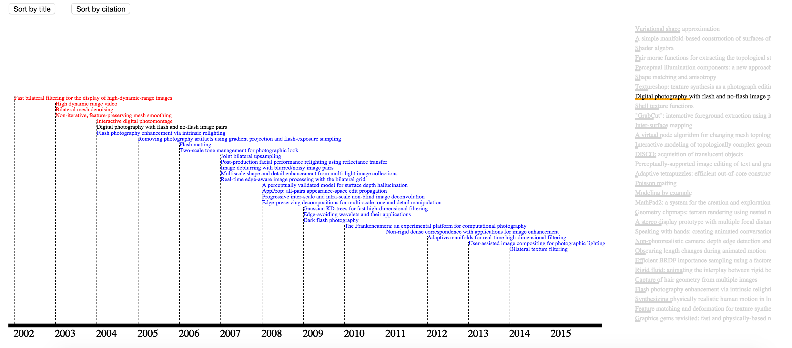

Design Evolution
Our initial design consists of four different views:
- Paper View Here we show all the papers, grouped by year. Each year occupies one column. This view will be wide enough to show about ten years but will be scroll-able horizontally to move the focus to a different period of time. Each paper's title will appear on one row and be click-able. When a paper is clicked on, the papers that this paper cites and the ones that cite it will be highlighted. Moreover, when a paper is mouse over, a pop-up will show the paper's full title, author lists, keywords, and DOI link. A bar will appear right under each paper's title, the length of which is proportional to the paper's number of citations (this is not yet shown in our design sketches). This help the user identify influential papers at a glance. This whole paper view can be sorted either alphabetically or by citation count. The papers can also be filtered by citation count, to hide papers with lesser impacts. We provide two checkboxes and a slider for these purposes.
- Institution View Here we show a map of all the institutions that have published papers to SIGGRAPH. They will appear as circles on a projected world map. The bigger the circle is, the more publications that institution has in the selected time period. Mousing over an institution will show its name and address. We chose a map for this view because for an institution, the geographical information can be important, for example, to a prospective graduate student looking for a school to apply to. Displaying a large amount of items using circles is also space-conserving.
- Author View In this view we show all paper authors and their collaboration relationships as a node-link diagram. Each author is a node, and two authors are linked if they have written a paper together. Bigger nodes represent more prolific authors, in terms of some metrics such as the H-index. Mousing over an author will show his/her name and affiliations. The reason we chose a node-link diagram for this view is because it highlights quite nicely the clusters between subsets of nodes, and the view is dynamic so it is easier to put any author at the center (for example, when his paper is being selected).
- Keyword View This view acts both as a view and a filter. Here we list all the keywords extracted from all the papers in alphabetical order. Keywords are selectable, and each time a keyword is clicked on, the related keywords are highlighted. This feature is particularly useful when the user clicks on a topic keyword (for example: "global illumination"), and the related keywords show common techniques used to solve problems related to that topic (for example: "path tracing", "radiosity", "photon mapping" which are common methods in graphics to achieve "global illumination"). Two keywords are related if they appear together in many papers. Moreover, selecting a set of keywords will reduce the amount of information shown in the other views, to retain only the papers/authors/institutions that are related to the selected set of keywords. This is useful because the list of papers/authors/institutions can be quite large. The following figure shows an initial design of this idea, where the list of papers was not really filtered by simply highlighted and re-sorted. This feature can be very interesting because a glance at the paper view can tell us the popularity of the current selected set of keywords throughout the years.
During data processing and implement, we realized that the amount of papers in the each year is quite large, which is about 150 papers per year. As a result, there is no way to arrange the entire paper view, 14 years and 100 papers per year, to one view with proper font size. The initial version of our implementation is shown as following figure.

There are two options to solve this issue. The first one is using zoom in and zoom out to let users explore paper views. We attempt to avoid that method because users may lose the entire view on their mind due to the change blindness. Hence, we added fisheye distortion to enable users to only zoom in texts in a small region as shown in the following Figure. However, the fisheye plugin we used is not suitable for zooming in texts. Also, because of the high density of texts, even if we rearrange texts to make it look better, it is still very messy for users to view.
After that, we decided to add a side bar for the selected year papers. When users select one year, the side bar will show all papers in that year and allow users to scroll. We believe this should be the best solution for our issue without zoom in and out. Users can get details as well as overall view at the same time at least.
However, we meet another question, which is how represent reference and citation relationship between papers in the paper view. As we mentioned before, it is too small to read and we cannot keep our original design. Fortunately, at the worst case, the total amount of reference and citation by one paper is 52. We determined to enlarge the font size of those papers and arrange them by stair shape as shown in following Figure. We use red and blue to highlight references and cited by papers for now.

Besides that, we also implemented functions, like ``sort title by citation count'' and ``sort title by letter''. More functionalities will be added before final submission.
In the meantime, we also realized it is quite difficult to do a university maps view as we promised in the proposal because it is hard to get coordination of universities. So, we decided to get rid of it and add more functionalities to papers view instead, such as searching title. Meanwhile, we can spend more time on keyword view, which we believe is much more useful for users to explore papers.
After milestone 1, we still looked for a better implementation for paper view and attempted to implement our initial design by some alternative ways. Fortunately, we found using scrolling down/up to control zoom in/out is able to provide users a better view control and more freedom to explore the view. Figure below shows our final implementation. Moreover, we add zoom in/out button on the top left of the view to give users hint that the view is zoom-able.
Another benefit for zoom-able paper view is providing more apparently view for user to explore the cited and reference relationship between papers. The main drawback of this alternative is tool-tip may block several papers and cannot contain too many details. Therefore, we add another view for paper details, which include title, authors, abstract, year, keywords, and citation number. Also, in order to give users a brief idea about reference information, we also add a subset paper view here, which only displays the highlighted papers in the paper view. Users can also to use fisheye effect to see titles.
At last, we want mention that there are about 3500 nodes in the author view, 2200 authors and 1300 papers. It is unreadable if we put all nodes in the view at the same time. Alternatively, we only display the selected paper, its authors, and its authors' publications. Even though it is a much smaller set compared with original one, the view allows user to click and change the selected papers as well. Figure below demonstrates that mouse-over and tool-tip to show some paper details.